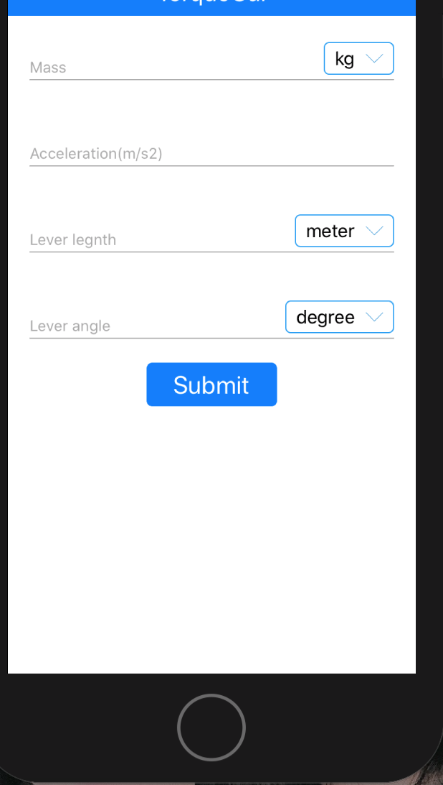
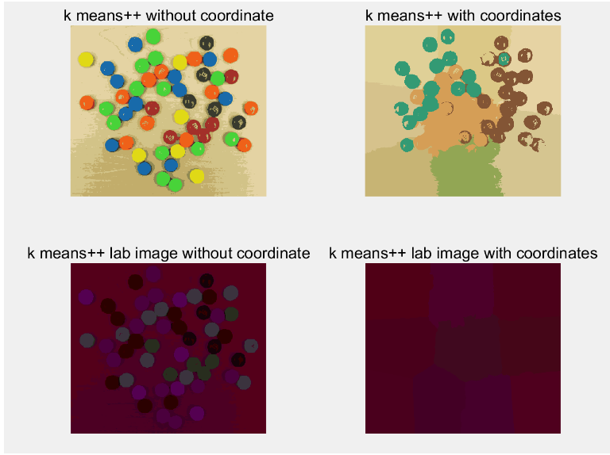

Calculator & Fish Track app (on ios)
Assignment of Mobile Application Enterprise Development - 2018 S1
These are two assignment items. The first is to make a calculator that can calculate torque,
enter the value you want to calculate, and the calculator will use the calculation formula to
calculate the torque based on the entered value.

